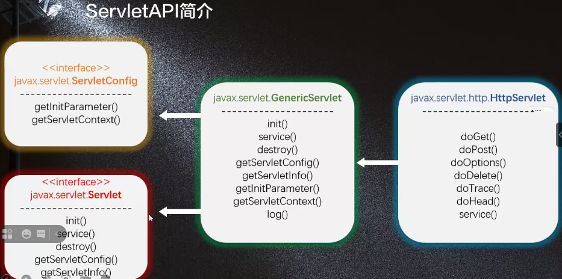

静态页面：内容不会发生变化
动态页面：可以通过人机交互使内容发生变化的页面
servlet（Server Applet），全程Java Serverlet，是用Java编写的类。其主要功能在于交互式地浏览和修改数据，生成动态Web内容。 总结（作用）：Servlet就是生成动态页面的web组件
JavaSE java 个人版/标准版。提供了Java开发的基础API。（无所不能，JavaSE可以开发任何程序）
JavaEE 企业版，提供了一系列的抽象的接口和类。（提供了一种规范，开发者创建类，继承/实现这些规范）
JavaME 移动端，嵌入式开发

存在两个顶级接口
javax.servlet.SetvletConfig
Servlet的配置管理对象(初始化)
javax.servlet.Servlet
是ServletAPI中的核心接口.描述了Servlet对象的生命周期。
Servlet对象的声明周期由Servlet容器管理